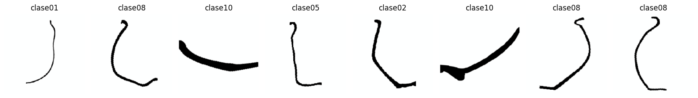
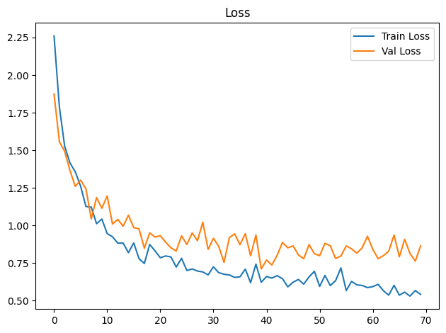
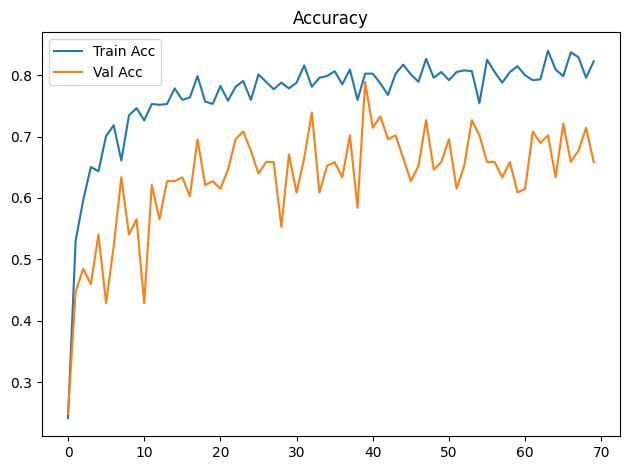
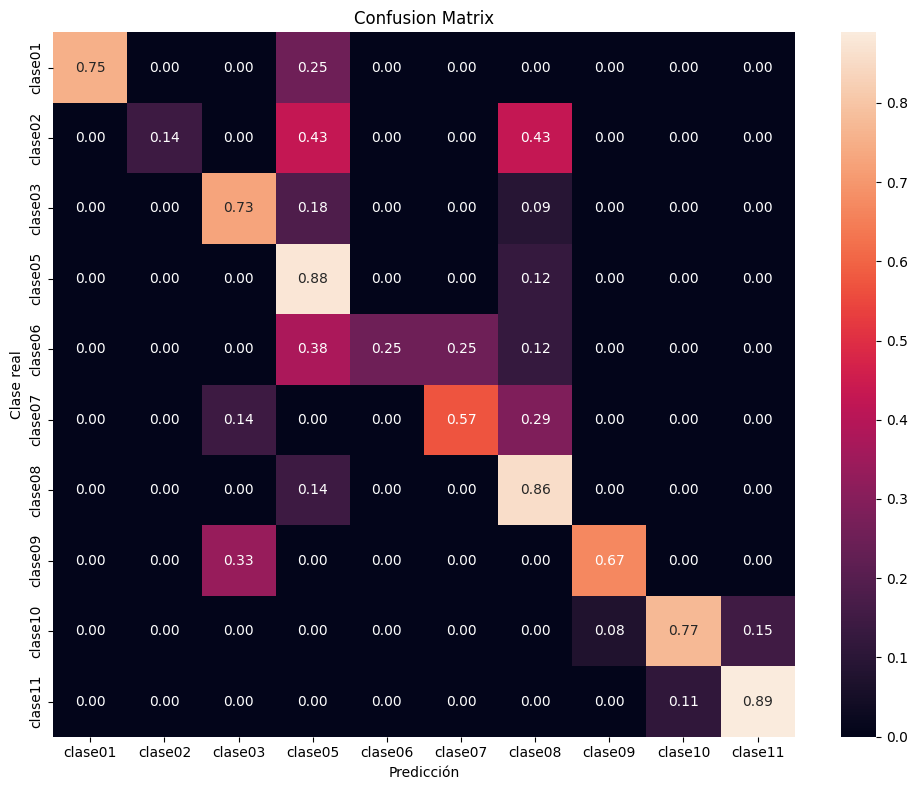

Dispositivo utilizado para procesamiento: CUDA - NVIDIA GeForce GTX 1650Entrenamiento de CNN ResNet-18 con Transfer Learning
Objetivos
- Construir un modelo baseline de clasificación mediante transfer learning con ResNet18 preentrenada.
- Entrenar inicialmente solo la capa clasificadora y descongelar
layer4enUNFREEZE_EPOCHcon una tasa de aprendizaje menor. - Aplicar transformaciones y aumentación de datos al conjunto de entrenamiento.
- Entrenar y validar el modelo registrando loss y accuracy por época.
- Detener el entrenamiento si val_loss no mejora suficientemente durante la paciencia configurada.
- Evaluar el modelo de la mejor época de validación sobre el conjunto de prueba.
- Analizar los resultados mediante accuracy, precision, recall, F1-score, reporte de clasificación y matriz de confusión normalizada.
- Guardar los pesos restaurados de la mejor época de validación (o los finales si se desactiva la parada anticipada).
Dispositivo para procesamiento
División de datos
La pertenencia de cada imagen a train, val o test se lee de la metadata generada por el notebook de división. La relación se realiza mediante ruta_relativa; por tanto, el split no se recalcula aunque cambien la semilla o los parámetros del entrenamiento.
Dataset seleccionado: completos
Directorio de datos: /home/rafael/Dev/vasijas/data/10.cuadrados_divididos_en_train_val_y_test
Metadata de split: data/10.cuadrados_divididos_en_train_val_y_test/metadata.csv
Clases: clase01 clase02 clase03 clase05 clase06 clase07 clase08 clase09 clase10 clase11
Split persistido -> train: 749, val: 161, test: 161
Conteo train por clase: [18, 32, 50, 39, 36, 34, 196, 14, 248, 82]
Pesos de clase: [4.161, 2.341, 1.498, 1.921, 2.081, 2.203, 0.382, 5.35, 0.302, 0.913]Epoch 1/300
Train Loss: 2.2608 | Train Acc: 0.2417 | Val Loss: 1.8744 | Val Acc: 0.2484
Tiempo de epoch: 0:00:08.124631
Epoch 2/300
Train Loss: 1.7892 | Train Acc: 0.5300 | Val Loss: 1.5572 | Val Acc: 0.4472
Tiempo de epoch: 0:00:05.273641
Epoch 3/300
Train Loss: 1.5259 | Train Acc: 0.5968 | Val Loss: 1.4926 | Val Acc: 0.4845
Tiempo de epoch: 0:00:05.129241
Epoch 4/300
Train Loss: 1.4159 | Train Acc: 0.6502 | Val Loss: 1.3646 | Val Acc: 0.4596
Tiempo de epoch: 0:00:05.288313
Epoch 5/300
Train Loss: 1.3564 | Train Acc: 0.6435 | Val Loss: 1.2603 | Val Acc: 0.5404
Tiempo de epoch: 0:00:05.236465
Epoch 6/300
Train Loss: 1.2611 | Train Acc: 0.7009 | Val Loss: 1.3021 | Val Acc: 0.4286
Tiempo de epoch: 0:00:05.161047
Epoch 7/300
Train Loss: 1.1264 | Train Acc: 0.7183 | Val Loss: 1.2438 | Val Acc: 0.5217
Tiempo de epoch: 0:00:05.280352
Epoch 8/300
Train Loss: 1.1221 | Train Acc: 0.6609 | Val Loss: 1.0439 | Val Acc: 0.6335
Tiempo de epoch: 0:00:05.337137
Epoch 9/300
Train Loss: 1.0117 | Train Acc: 0.7343 | Val Loss: 1.1857 | Val Acc: 0.5404
Tiempo de epoch: 0:00:05.151325
Epoch 10/300
Train Loss: 1.0428 | Train Acc: 0.7463 | Val Loss: 1.1145 | Val Acc: 0.5652
Tiempo de epoch: 0:00:05.186940
Epoch 11/300
Train Loss: 0.9459 | Train Acc: 0.7263 | Val Loss: 1.1964 | Val Acc: 0.4286
Tiempo de epoch: 0:00:05.176792
Epoch 12/300
Train Loss: 0.9250 | Train Acc: 0.7530 | Val Loss: 1.0096 | Val Acc: 0.6211
Tiempo de epoch: 0:00:05.282577
Epoch 13/300
Train Loss: 0.8821 | Train Acc: 0.7517 | Val Loss: 1.0406 | Val Acc: 0.5652
Tiempo de epoch: 0:00:05.282470
Epoch 14/300
Train Loss: 0.8833 | Train Acc: 0.7530 | Val Loss: 0.9953 | Val Acc: 0.6273
Tiempo de epoch: 0:00:05.214793
Epoch 15/300
Train Loss: 0.8193 | Train Acc: 0.7784 | Val Loss: 1.0685 | Val Acc: 0.6273
Tiempo de epoch: 0:00:05.169505
Epoch 16/300
Train Loss: 0.8840 | Train Acc: 0.7597 | Val Loss: 0.9856 | Val Acc: 0.6335
Tiempo de epoch: 0:00:05.275872
Epoch 17/300
Train Loss: 0.7787 | Train Acc: 0.7637 | Val Loss: 0.9772 | Val Acc: 0.6025
Tiempo de epoch: 0:00:05.167604
Epoch 18/300
Train Loss: 0.7474 | Train Acc: 0.7984 | Val Loss: 0.8484 | Val Acc: 0.6957
Tiempo de epoch: 0:00:05.205481
Epoch 19/300
Train Loss: 0.8736 | Train Acc: 0.7570 | Val Loss: 0.9510 | Val Acc: 0.6211
Tiempo de epoch: 0:00:05.249668
Epoch 20/300
Train Loss: 0.8317 | Train Acc: 0.7530 | Val Loss: 0.9231 | Val Acc: 0.6273
Tiempo de epoch: 0:00:05.130263
Epoch 21/300
Train Loss: 0.7856 | Train Acc: 0.7824 | Val Loss: 0.9321 | Val Acc: 0.6149
Tiempo de epoch: 0:00:05.190433
Epoch 22/300
Train Loss: 0.7972 | Train Acc: 0.7583 | Val Loss: 0.8888 | Val Acc: 0.6460
Tiempo de epoch: 0:00:05.136461
Epoch 23/300
Train Loss: 0.7908 | Train Acc: 0.7810 | Val Loss: 0.8515 | Val Acc: 0.6957
Tiempo de epoch: 0:00:05.202186
Epoch 24/300
Train Loss: 0.7235 | Train Acc: 0.7904 | Val Loss: 0.8301 | Val Acc: 0.7081
Tiempo de epoch: 0:00:05.165025
Epoch 25/300
Train Loss: 0.7818 | Train Acc: 0.7597 | Val Loss: 0.9310 | Val Acc: 0.6770
Tiempo de epoch: 0:00:05.301356
Epoch 26/300
Train Loss: 0.7005 | Train Acc: 0.8011 | Val Loss: 0.8739 | Val Acc: 0.6398
Tiempo de epoch: 0:00:05.201620
Epoch 27/300
Train Loss: 0.7109 | Train Acc: 0.7891 | Val Loss: 0.9503 | Val Acc: 0.6584
Tiempo de epoch: 0:00:05.090363
Epoch 28/300
Train Loss: 0.6969 | Train Acc: 0.7770 | Val Loss: 0.8988 | Val Acc: 0.6584
Tiempo de epoch: 0:00:05.227643
Epoch 29/300
Train Loss: 0.6909 | Train Acc: 0.7877 | Val Loss: 1.0212 | Val Acc: 0.5528
Tiempo de epoch: 0:00:05.152319
Epoch 30/300
Train Loss: 0.6716 | Train Acc: 0.7784 | Val Loss: 0.8410 | Val Acc: 0.6708
Tiempo de epoch: 0:00:05.219522
Epoch 31/300
Train Loss: 0.7250 | Train Acc: 0.7877 | Val Loss: 0.9148 | Val Acc: 0.6087
Tiempo de epoch: 0:00:05.238859
Epoch 32/300
Train Loss: 0.6862 | Train Acc: 0.8158 | Val Loss: 0.8611 | Val Acc: 0.6646
Tiempo de epoch: 0:00:05.156439
Epoch 33/300
Train Loss: 0.6756 | Train Acc: 0.7810 | Val Loss: 0.7540 | Val Acc: 0.7391
Tiempo de epoch: 0:00:05.247092
Epoch 34/300
Train Loss: 0.6707 | Train Acc: 0.7957 | Val Loss: 0.9195 | Val Acc: 0.6087
Tiempo de epoch: 0:00:05.126426
Epoch 35/300
Train Loss: 0.6548 | Train Acc: 0.7984 | Val Loss: 0.9444 | Val Acc: 0.6522
Tiempo de epoch: 0:00:05.144409
Epoch 36/300
Train Loss: 0.6587 | Train Acc: 0.8064 | Val Loss: 0.8720 | Val Acc: 0.6584
Tiempo de epoch: 0:00:05.302049
Epoch 37/300
Train Loss: 0.7098 | Train Acc: 0.7850 | Val Loss: 0.9456 | Val Acc: 0.6335
Tiempo de epoch: 0:00:05.266083
Epoch 38/300
Train Loss: 0.6192 | Train Acc: 0.8091 | Val Loss: 0.7987 | Val Acc: 0.7019
Tiempo de epoch: 0:00:05.112516
Epoch 39/300
Train Loss: 0.7433 | Train Acc: 0.7597 | Val Loss: 0.9366 | Val Acc: 0.5839
Tiempo de epoch: 0:00:05.116735
Epoch 40/300
Train Loss: 0.6225 | Train Acc: 0.8024 | Val Loss: 0.7111 | Val Acc: 0.7888
Tiempo de epoch: 0:00:05.122609
Epoch 41/300
Train Loss: 0.6609 | Train Acc: 0.8024 | Val Loss: 0.7704 | Val Acc: 0.7143
Tiempo de epoch: 0:00:05.108470
Epoch 42/300
Train Loss: 0.6499 | Train Acc: 0.7864 | Val Loss: 0.7370 | Val Acc: 0.7329
Tiempo de epoch: 0:00:05.181351
Epoch 43/300
Train Loss: 0.6665 | Train Acc: 0.7677 | Val Loss: 0.8023 | Val Acc: 0.6957
Tiempo de epoch: 0:00:05.199365
Epoch 44/300
Train Loss: 0.6460 | Train Acc: 0.8024 | Val Loss: 0.8868 | Val Acc: 0.7019
Tiempo de epoch: 0:00:05.113936
Epoch 45/300
Train Loss: 0.5919 | Train Acc: 0.8171 | Val Loss: 0.8516 | Val Acc: 0.6646
Tiempo de epoch: 0:00:05.133447
Epoch 46/300
Train Loss: 0.6227 | Train Acc: 0.8011 | Val Loss: 0.8643 | Val Acc: 0.6273
Tiempo de epoch: 0:00:05.169049
Epoch 47/300
Train Loss: 0.6411 | Train Acc: 0.7891 | Val Loss: 0.8044 | Val Acc: 0.6522
Tiempo de epoch: 0:00:05.159132
Epoch 48/300
Train Loss: 0.6096 | Train Acc: 0.8264 | Val Loss: 0.7790 | Val Acc: 0.7267
Tiempo de epoch: 0:00:05.199745
Epoch 49/300
Train Loss: 0.6577 | Train Acc: 0.7957 | Val Loss: 0.8733 | Val Acc: 0.6460
Tiempo de epoch: 0:00:05.069906
Epoch 50/300
Train Loss: 0.6954 | Train Acc: 0.8051 | Val Loss: 0.8124 | Val Acc: 0.6584
Tiempo de epoch: 0:00:05.221735
Epoch 51/300
Train Loss: 0.5946 | Train Acc: 0.7917 | Val Loss: 0.7989 | Val Acc: 0.6957
Tiempo de epoch: 0:00:05.149958
Epoch 52/300
Train Loss: 0.6675 | Train Acc: 0.8051 | Val Loss: 0.8818 | Val Acc: 0.6149
Tiempo de epoch: 0:00:05.194465
Epoch 53/300
Train Loss: 0.6001 | Train Acc: 0.8077 | Val Loss: 0.8653 | Val Acc: 0.6522
Tiempo de epoch: 0:00:05.304462
Epoch 54/300
Train Loss: 0.6328 | Train Acc: 0.8064 | Val Loss: 0.7809 | Val Acc: 0.7267
Tiempo de epoch: 0:00:05.131568
Epoch 55/300
Train Loss: 0.7180 | Train Acc: 0.7543 | Val Loss: 0.7971 | Val Acc: 0.7019
Tiempo de epoch: 0:00:05.125016
Epoch 56/300
Train Loss: 0.5671 | Train Acc: 0.8251 | Val Loss: 0.8642 | Val Acc: 0.6584
Tiempo de epoch: 0:00:05.136841
Epoch 57/300
Train Loss: 0.6280 | Train Acc: 0.8051 | Val Loss: 0.8447 | Val Acc: 0.6584
Tiempo de epoch: 0:00:05.254927
Epoch 58/300
Train Loss: 0.6050 | Train Acc: 0.7877 | Val Loss: 0.8157 | Val Acc: 0.6335
Tiempo de epoch: 0:00:05.221226
Epoch 59/300
Train Loss: 0.6008 | Train Acc: 0.8051 | Val Loss: 0.8516 | Val Acc: 0.6584
Tiempo de epoch: 0:00:05.201657
Epoch 60/300
Train Loss: 0.5870 | Train Acc: 0.8144 | Val Loss: 0.9285 | Val Acc: 0.6087
Tiempo de epoch: 0:00:05.187292
Epoch 61/300
Train Loss: 0.5931 | Train Acc: 0.7997 | Val Loss: 0.8414 | Val Acc: 0.6149
Tiempo de epoch: 0:00:05.181060
Epoch 62/300
Train Loss: 0.6084 | Train Acc: 0.7917 | Val Loss: 0.7796 | Val Acc: 0.7081
Tiempo de epoch: 0:00:05.295423
Epoch 63/300
Train Loss: 0.5660 | Train Acc: 0.7931 | Val Loss: 0.7992 | Val Acc: 0.6894
Tiempo de epoch: 0:00:05.171425
Epoch 64/300
Train Loss: 0.5367 | Train Acc: 0.8398 | Val Loss: 0.8292 | Val Acc: 0.7019
Tiempo de epoch: 0:00:05.159598
Epoch 65/300
Train Loss: 0.6023 | Train Acc: 0.8091 | Val Loss: 0.9362 | Val Acc: 0.6335
Tiempo de epoch: 0:00:05.163881
Epoch 66/300
Train Loss: 0.5367 | Train Acc: 0.7984 | Val Loss: 0.7915 | Val Acc: 0.7205
Tiempo de epoch: 0:00:05.123504
Epoch 67/300
Train Loss: 0.5566 | Train Acc: 0.8371 | Val Loss: 0.9080 | Val Acc: 0.6584
Tiempo de epoch: 0:00:05.137081
Epoch 68/300
Train Loss: 0.5303 | Train Acc: 0.8291 | Val Loss: 0.8142 | Val Acc: 0.6770
Tiempo de epoch: 0:00:05.218105
Epoch 69/300
Train Loss: 0.5671 | Train Acc: 0.7957 | Val Loss: 0.7628 | Val Acc: 0.7143
Tiempo de epoch: 0:00:05.145968
Epoch 70/300
Train Loss: 0.5417 | Train Acc: 0.8224 | Val Loss: 0.8639 | Val Acc: 0.6584
Tiempo de epoch: 0:00:05.282698
Parada anticipada en epoch 70: 30 épocas sin mejora suficiente de val_loss.
Se restauran los pesos de epoch 40 (val_loss=0.7111).
Tiempo total de entrenamiento: 0:06:06.431134

Test Acc: 0.7453
precision recall f1-score support
clase01 1.00 0.75 0.86 4
clase02 1.00 0.14 0.25 7
clase03 0.80 0.73 0.76 11
clase05 0.32 0.88 0.47 8
clase06 1.00 0.25 0.40 8
clase07 0.67 0.57 0.62 7
clase08 0.82 0.86 0.84 42
clase09 0.33 0.67 0.44 3
clase10 0.95 0.77 0.85 53
clase11 0.67 0.89 0.76 18
accuracy 0.75 161
macro avg 0.76 0.65 0.62 161
weighted avg 0.83 0.75 0.75 161

Modelo guardado en: output/models/model_resnet18_bs16_lr1e-3_weighted.pth